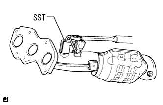
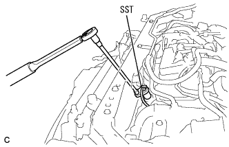
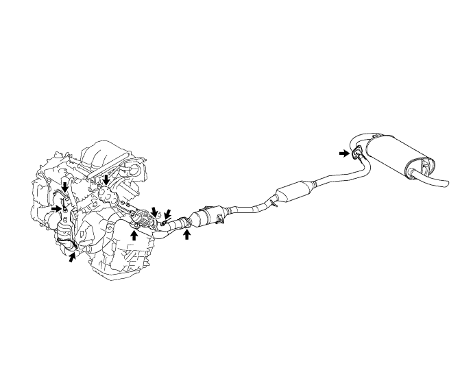

Air Fuel Ratio Sensor (2GR-FE) Installation |
| 1. Air Fuel Ratio Sensor Installation |
 |
Using SST, install the air fuel ratio sensor to the exhaust manifold.
| 2. Install Exhaust Manifold Sub-assembly RH |
Install the exhaust manifold RH with 6 new nuts.
 |
Tighten the nuts in the order shown in the illustration.
Connect the air fuel ratio sensor connector.
| 3. Install Exhaust Pipe Assembly Front |
 |
Install with 2 new gaskets, 2 nuts and 2 bolts.
 |
Install the exhaust center pipe assembly with 2 bolts and 2 compression springs.
Connect the oxygen sensor No.2 connector.
| 4. Install Exhaust Pipe Assembly Center |
|
Install the exhaust center pipe assembly with 2 new gaskets, 2 nuts and 2 bolts.
 |
Before installing the oxygen sensor body, twist it approximately 4 turns as shown in the illustration, then install it.
 |
Using SST, install the oxygen sensor.
| 5. Air Fuel Ratio Sensor NO.2 Installation |
 |
Using SST, install the air fuel ratio sensor No.2 to the exhaust manifold.
Connect the air fuel ratio sensor No.2 connector.
| 6. Remove Radiator Upper Air Deflector |
 |
Remove the 9 clips and the radiator upper air deflector.
| 7. Install Engine Under Cover NO.1 |
Install engine under cover NO.1 with the 6 bolts and 7 clips.
| 8. Install Engine Under Cover |
Install the engine under cover with the 4 bolts and 4 screws.
| 9. Inspect for Exhaust Gas Leaks |
Check that there are no exhaust gas leaks from the locations shown in the illustration (exhaust pipe joints and each sensor installation area).
